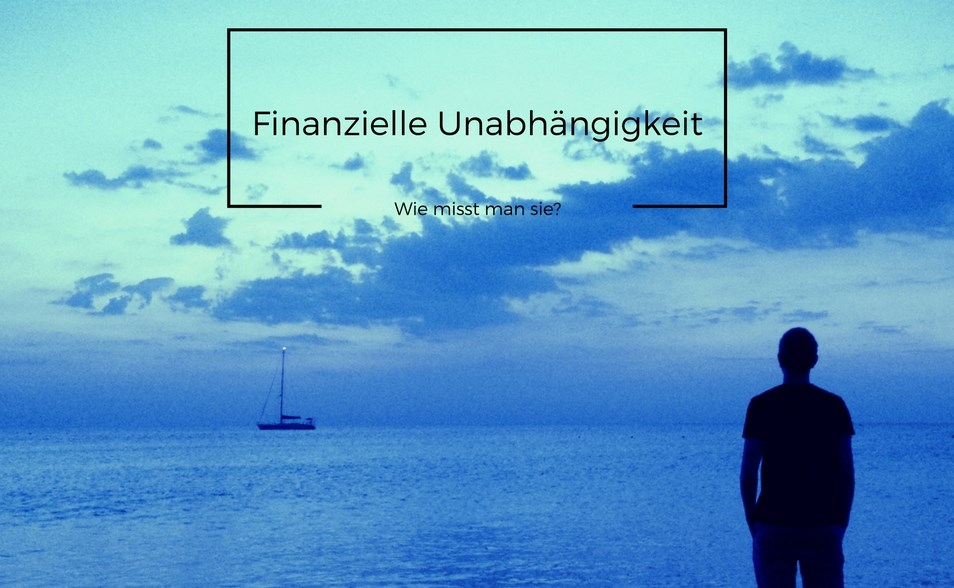

Wann bin ich finanziell unabhängig? – genughaben
 Blog Über Uns Häufige Fragen Bücherregal Podcasts Ach so funktioniert das! Gestern Heute Übermorgen Star Trek Picard Quark ohne Schnitte (Link) Weitere Projekte Frank Wolfs Blog Permakultur praktisch Ökolustige T-Shirts UnterstützenBlog Über Uns Häufige Fragen Bücherregal Podcasts Ach so funktioniert das! Gestern Heute Übermorgen Star Trek Picard Quark ohne Schnitte (Link) Weitere Projekte Frank Wolfs Blog Permakultur praktisch Ökolustige T-Shirts Unterstützen Home Finanzielle Unabhängigkeit Wann bin ich finanziell unabhängig? Finanzielle Unabhängigkeit Genug haben
Wann bin ich finanziell unabhängig?
geschrieben von Frank Wolf 7. November 2013Eine häufige Frage ist: Ab wann ist man eigentlich finanziell unabhängig? Mit einer Millionen oder gar 2 Millionen Euro?
Die Botschaft der meisten Blogs zum Thema finanzielle Unabhängigkeit lässt sich leicht auf eine Formel bringen: verdiene mehr! Ich habe dagegen allgemein erst einmal nichts einzuwenden: unabhängig vom benötigten Zielkapital hilft mir mehr Geld zu verdienen mein Ziel schneller zu erreichen, als weniger zu verdienen. Aber es ist eben nur die halbe Wahrheit. Gelegentlich hört man noch: man solle nicht arg verschwenderisch sein: also z.B. einen Sportwagen gebraucht und nicht neu kaufen. Ich mag es überspitzen aber den Rat sparsam zu leben, lese ich selten.
Die Empfehlung mancher Geldgurus sich anzugewöhnen immer mit einer größeren Menge Geld im Portemonnaie herzulaufen, um sich an ein reicheres Leben zu gewöhnen, halte ich für verfehlt: man wird nicht finanziell frei, indem man sich vorstellt, was man alles ausgibt, wenn man finanziell frei ist. Man wird finanziell frei, indem man sich vorstellt irgendwann viele Vermögenswerte zu besitzen. Der Unterschied ist meiner Meinung nach entscheidend. Wenn ihr mehr von einem Sportwagen als von einem vollen Aktiendepot träumt, dann geht ihr eher viel Geld aus und erreicht euer Ziel erst recht nicht.
Wie viel Geld benötigt man nun für die finanzielle Unabhängigkeit? Das hängt von eurem Budget ab! In der folgenden Grafik sind Budgetkurven dargestellt. Für jeden Punkt auf einer der Budgetkurven und einem erwarteten Zins- bzw. Dividendengewinn in Prozent kann man auf der vertikalen Achse ablesen wie viel Kapital nötig ist, um das Budget zu realisieren. Ich habe für die Kurven bereits Abgeltungssteuer (mit Soli, ohne Kirchensteuer) und 801 Euro Freibetrag im Jahr berücksichtigt.
Monatsbudgets. Bei den Kapitalangaben sind bereits eine Abgeltungssteuer von 26,375% sowie ein Freibetrag von 801 Euro im Jahr berücksichtigt. (Quelle: genughaben.de)
Die 3.500-EUR-Budget-Kurve (oberste, grün) zeigt euch für einen erwarteten Zinsgewinn z.B. 5%, das zugehörige benötigte Kapital an (hier: 1,1 Millionen Euro). Für ein Budget von 800 EUR sind es hingegen für den selben Zinssatz nur 240.000 EUR.
Wie kommt man nun zu einer realistischen Einschätzung von kommt, was man braucht? Am besten schreibt ihr dazu für ein paar Monate eure Ausgaben auf: eine Anleitung findet ihr hier . Eine schnelle Abschätzung erhaltet ihr, indem ihr euch hinsetzt und grob überlegt, was ihr im letzten viertel Jahr ausgegeben habt. Wer sein Gehalt ganz oder zum größten Teil ausgibt, kann dadurch jedoch auch zur Überzeugung kommen, dass er/sie sein ganzes Geld benötigt ohne sich einschränken zu können. Dann wird es mit der finanziellen Unabhängigkeit jedoch schwierig und man muss umdenken: entweder ist das Ziel finanzielle Unabhängigkeit zu erreichen doch nicht so wichtig oder alle anderen Ziele, für die man so viel Geld braucht sind noch wichtiger. Das ist keinesfalls trivial: der Gedanke, dass es tatsächlich die eigenen, freiwilligen Lebensentscheidungen sind, dass man nicht mehr Geld zur Seite legen kann und das nicht etwa immer und in allem die Umstände Schuld sind, ist nicht leicht zu akzeptieren. Genauso wenig die Anerkennung dessen, dass einem andere Dinge (hier: Konsum) doch wichtiger sind als Freiheit ist ebenfalls schwierig. Okay ist beides dennoch: es kommt eben auf eure Ziele an!
Wer beispielsweise im Jahr 36.000 Euro brutto verdient, hat circa 2.000 Euro netto im Monat bzw. 24.000 Euro im Jahr. Kann man etwa 3.0% Einnahmen realisieren, dann benötigt man für ein Budget von 2.000 Euro im Monat laut der Grafik oben 1 Millionen Euro. Wer meint er habe ein Nettobudget von 3.500 Euro im Monat nötig, braucht bei 3.0% Zinsen gar 1.73 Millionen Euro.
Warum so viel Geld?
Ich frage mich ja oft, warum viele glauben soviel Geld zu benötigen, wenn man den ganzen Tag frei hat und somit in Ruhe überlegen kann, wo man einkauft kann oder ob man das überhaupt muss. Eins ist doch klar: wenn man finanziell unabhängig ist, hat man viel Zeit! Das ist, denke ich, ja auch einer der Hauptgründe dafür, warum viele finanziell unabhängig werden wollen! Nun, und täte es tatsächlich weh in dieser freien Zeit etwas zu suchen, bis man das Gewünschte oder Benötigte etwas günstiger findet oder sieht wie man auch ohne den Gegenstand X sich Bedürfnis Y erfüllen kann? Welche Alternativen zu direktem Einkaufkonsum es gibt, könnt ihr z.B. hier nachlesen.
Wer jetzt sagt: “Das hat doch dann nichts mehr mit finanzieller Unabhängigkeit zu tun!”, den möchte ich fragen: “Was hat es denn mit Unabhängigkeit zu tun, wenn du die besten 20 oder 30 Jahre deines Lebens arbeitend damit verbringst Geld für Freiheit in der Rente anzusparen und praktisch den geringsten Teil der Zeit entscheiden kannst, was du willst?”.
Und: auch wenn es wie ein Widerspruch klingen mag: angenommen du erreichst finanzielle Freiheit in deinen 30ern oder 40ern, dann ist es doch sehr unwahrscheinlich, dass du nie wieder etwas tun wirst, wofür du auch Geld bekommen wirst. Es reicht daher eben doch schon aus etwas knapper zu planen sprich’ nur eine Sockel-Finanzielle-Unabhängigkeit aufzubauen und eine Differenz für Luxus oder anderes eben doch noch manuell zu verdienen in Teilzeit oder einmal in diesem Jahr und dann erst wieder im übernächsten Jahr oder durch ein kleines Geschäft nebenher. Es gibt viele Möglichkeiten!
Ein Beispiel dafür wie man mit relativ wenig Kapital finanzielle Unabhängigkeit erreichen kann: Ich fahre jeden Tag mit dem Fahrrad zur Arbeit, was mir Geld spart und mich fit hält. Auf dem Weg ist eine Second-Hand-Laden für Kleidung, den ich etwa 1x im Monat besuche. Dort habe ich beispielsweise vor zwei Wochen ein Hugo-Boss-Hemd gekauft im Prinzip neuwertig für 18 Euro (Neupreis 89.95). Genauso habe ich Regenhose (von Helly Hansen) für 9 Euro und ein Hemd von Calvin Klein (13 Euro) bekommen. Gegenwärtig suche ich noch ein weiteres Sakko. Der Unterschied zu regulärem Konsumverhalten ist also: ich kaufe mir das Sakko nicht sofort heute bei Karstadt für 200 Euro oder ein Sakko einer billige Marke für 50 Euro, dass dann nach 1-2 Jahren kaputt ist sondern ich halte Ausschau nach einem qualitativ hochwertigem Sakko für einen kleinen Preis. Die Einsparung liegt wie im Beispiel mit dem Hugo-Boss-Hemd nicht selten bei 75%.
Ein weiteres Beispiel : ich habe neulich nach einem Mixer gesucht. Ein durabler Handmixer kostet wenigstens 35 Euro. Der Vater einer Freundin arbeitet als Hausmeister in einem Kindergarten mit Verschenke-Ecke (*), dort hat er einen mitgebracht, den ich jahrelang benutzt habe. Auf ähnliche Weise bin ich auch zu einer Brotbackmaschine, einer Mütze und ein paar Werkzeugen gekommen. Eine digitale Alternative ist freecyle .
(*) Verschenke-Ecken sind eine ganz großartige Erfindung! Jedes Mehrpersonenhaus sollte, so eine einrichten! Einfach ein Fensterbrett nehmen und nicht mehr benötigte Gegenstände mit einen Zettel dazu hinlegen. Und: bitte keine kaputten Gegenstände dort ablegen! Es muss schon den Anschein haben, dass es jemand noch benötigen könnte. Nachbarn machen das dann nicht selten auch bald so: ich bin so schon zu einer ganze Reihe völlig neuwertiger Gegenstände gekommen.
Weitere Beispiele findet ihr in diesem Artikel .
Ich denke, dass man im Schnitt ½-⅔ der Kosten durch Kaufen mit Kopf einsparen kann. Dadurch müssten dann schon gut 8-10.000 Euro Nettoerträge für finanzielle Unabhängigkeit ausreichen.
Laut der Grafik oben benötigt man für ein Nettomonatsbudget von 800 Euro (9.600 Euro netto im Jahr) bei 4% Einnahmen rund 267.000 Euro. Wer nun netto 2.500 Euro verdient und jetzt mit 800 Euro netto auskommt, muss dafür circa 10 Jahre 1700 Euro monatlich sparen. Langwierig?
Hol’ dir über dieses Banner 1% Bonus auf deine Geldanlage bei Mintos!
Eine Möglichkeiten aus der Misere wäre: noch weniger Geld benötigen (das mag insbesondere in Deutschland schwierig sein) oder: höhere Zinseinnahmen zu generieren (also z.B. bei Mintos bis 12% mein XIRR ist aktuell 10,66% , genaueres dazu berichte ich hier ). Das ist wohl möglich wenn man sich mit der Anlage von Geld beschäftigen mag.
Eine weitere Ansatz wäre es, von absoluter finanzieller Unabhängigkeit abzusehen: vielleicht hättest du ja sowieso keine Lust jede Woche immer frei zu haben? Wer weniger Geld benötigt, kann auch weniger arbeiten. Das Ersparen von finanzieller Unabhängigkeit rückte so zwar in noch weitere Ferne: man hätte aber das, worum es vielen geht sofort erreicht: mehr Zeit! Mehr Zeit für bewussteren und damit sparsameren Konsum und den Ausbau der eigenen Fähigkeiten und Netzwerke sowie der Beschäftigung mit Dingen für die man brennt.
Wer diesen Blog schon etwas länger ließt weiß, dass ich z.B. gärtnere, haltbares Essen in großen Mengen bestelle und mein Fahrrad selbst repariere. Zuhause essen wir mit wenigen Ausnahmen nur Bio für 67 Euro pro Person und Monat. Für Transport gebe ich im Monat … nichts aus: abgesehen von seltenen Faulheitstickets für den öffentlichen Nahverkehr (z.B. für weiter entfernt liegende Strecken). Auch fallen (selten) geringe Kosten für das eine oder andere Ersatzteil an sehr empfehlen kann ich die Marathon Plus Reifenmäntel von Schwalbe ich habe seit 8 Monaten keinen einzigen Platten mehr gehabt!
Ein weitere Methode uns massiv Geld zu sparen: JH und ich bewohnen zusammen nur eine 38-Quadratmeter-Wohung. Du kannst mehr unter: Wie wir wohnen nachlesen.
Eine wichtige Prämisse bei der Suche nach einer neuen Wohnung ist, dass diese günstig, nicht unnötig groß ist (um Unterhaltskosten zu sparen) und nicht zu weit zu unseren Arbeitsorten liegt (um Fahrtkosten zu sparen).
Wenn wir einen Film sehen wollen, dann gucken wir uns den nicht sofort im Kino für 8 Euro an, sondern warten 3 Monaten dann gibt es denselben Filme für 1,5 Euro im Audimax der Uni, an der wir beide studiert haben: das ist nicht nur billiger, sondern auch aufgrund des Ambientes und der anderen Zuschauer unterhaltsamer man wird z.B. gern für einen Dozenten gehalten 🙂 Und: es sind gar nicht so selten noch weitere “ältere” Zuschauer dort sind, die auch keine Dozenten sind.
So nicht jeder muss alles gleich machen die Beispiele sollen jedoch Anregung für eigene Ideen geben!
Wer von hier ausgehend weiterlesen möchte, dem kann ich neben weiterer Artikel hier folgende Bücher empfehlen:
Rich Dad Poor Dad: Was die Reichen ihren Kindern über Geld beibringen Your Money or Your Life: 9 Steps to Transforming Your Relationship with Money and Achieving Financial Independence: Revised and Updated for the 21st CenturyTitelbild von: Investment Zen ( Lizenz )
Ursprüngliche publiziert am 04.11.2011.
Wann bin ich finanziell unabhängig? was last modified: August 14th, 2017 by Frank Wolf 11 KommentareFrank Wolf
Ich schreibe Artikel und zeichne Illustrationen zu diversen Themen rund um ein einfaches und zufriedenes Leben. Auf genughaben.de findet ihr 250+ Artikel von mir zu den Themen Minimalismus, persönliche Finanzen, gesunde Ernährung, Bio-Gärtnern, Permakultur, guten Konsum, Geldanlagen, Psychologie usw.
Vorheriger ArtikelEin guter Deal oder wie ich gute Produkte erkenne.
Nächster ArtikelWieso wir tun, was wir tun.
Das könnte dich auch interessieren.
Reisen günstig und angenehm.
29. März 2017My garden rocks Entwicklung im März...
30. März 2016Die persönliche Diskontrate: Leihen und Verleihen
29. Februar 2016Finanzielles Fasten
6. März 2016Leichte und schwere Probleme.
14. April 2016Ziele und Bemühungen am Beispiel der logistischen...
9. März 2016Kommentare zum Bestreben finanzielle Unabhängigkeit zu erreichen.
4. Juni 2012Finanziell Ausmisten
26. April 2016Sieg über die Zettelwirtschaft Teil 2...
18. Februar 2016Erfolgreich Veränderungen im Leben bewirken: Mit Tiny...
5. Juli 201611 Kommentare
Alex 3. Juni 2012 at 20:16Hallo Frank,
einen interessanten Blog betriebst du hier. Es ist schoen zu sehen, dass im deutsprachigen Internet die Publikationen von Privatpersonen zur Thematik intelligenten und nachhaltigerem Konsum, Suffizienz etc. immer weiter
zunehmen. Ich interessiere mich auch besonders fuer die Thematik der finanziellen Unabhaengigkeit bzw. des Arbeiten in nicht klassischen Arbeitsvehaeltnissen, wie z.B. des Teilzeitarbeiten in hoeher qaulifizierten Berufen, um ein selbstbestimmteres Leben zu ermoeglichen.
Deine Gedanken zu der Thematik im obenstehenden Text bzw. anderen Posts finde ich spannend. Es werden aber einige Ranbedingungen nicht naeher efiniert und wesentliche Einfluss/-stoergroessen nicht beruecksichtigt.
Die Grafik suggeriert, dass man in der Genussphase der finanziellen Unabhaengigkeit effektiv 3%-8% Zinsen erzielt. Das halte ich persoenlich ohne erhoehten Risikoeinsatz nicht fuer realistisch. Mit einem geschickt gewaehlten
Anlagezeitraum konnte man sich bis vor kurzem bei serioesen Banken 😉 im Besten Fall ca. 3,75% Zinsen sichern. Die durschnittliche offizielle Inflationrate fuer das vergangene Jahr lag bei 2,3%. Effektiv bleiben noch 1,55% Zinsen.
Dieser Bereich kommt in der Grafik nicht vor. Mit der Kapitalertragssteuer die du bereits beruecksichtigt hast erscheint dieser Prozentsatz noch schmaler. Es ist sehr wahrscheinlich, dass die durschnittliche Inflationsrate fuer das Jahr 2012 noch hoeher ausfallen wird und die Zinsen noch weiter sinken werden. Dann ist bei einer sicherheitsorientierten Anlage moeglicherweise nocht nicht einmal der Werterhalt der Ersparnisse moeglich. Eine risikofreudigere Anlage mit der moeglichkeit hoehere Zinsertraege zu erziehlen halte ich fuer die den geplanten Einsatz des Kapitals als Lebensgrundlage ungeeignet von den moralischen Aspekten ganz abgesehen. Das mitlerweile sogar die FAZ vom Mythos spricht wenn Privatpersonen das Geld fuer sich arbeiten lassen wollen finde ich bezeichnend.
Hier eine andere vereinfachte Rechnung: Mit deinen Sparrate von 1700 EUR monatlich fuer 10 Jahre kannst du bei Werterhalt der Ersparnisse und Ausgaben 800 EUR monatlich dein Leben ca. 21 Jahre finanzieren. Als Akademiker lag dein Sparzeitraum beispielsweise zwischen dem 25sten und dem 35sten Lebensjahr. Damit bleibt dir bei einer Lebenserwartung von 75 Jahren ein zu ueberbrueckender Zeitraum (ohne Erparnisse) von ca. 19 Jahren!
Generell ist die Annahme von 800EUR auch relativ niedrig angesetzt. Was passiert wenn der Arbeitsgeber gezwungenermassen gewechselt werden muss und Pendeln mit OEPNV oder Auto erforderlich wird und/oder alternativ Gehaltseinbussen hinzunehmen sind? Wie sieht die Haushaltssituation beispielsweise mit Kindern und ohne durch ein Angestellenverhaeltnis finanzierte Krankenversicherung aus?
Ueber eine Diskussion wuerde ich mich freuen.
Gruss,
Alex
Moin Alex,
ich habe als Reaktion auf deine interessanten Anmerkungen einen Blog-Artikel als Antwort verfasst.
https://genughaben.de/blog/2012/06/04/kommentare-zum-bestreben-finanzielle-unabhangigkeit-zu-erreichen/
Ich bin gespannt, was du davon hälst und freue mich auf weitere Diskussion auch mit anderen.
Vielen Dank für die grafische Aufarbeitung der Zahlenkolonnen. Mir hilft es immer das Ganze zu sehen.
Ich glaube das wichtigste ist, dass man sich über seine Geldflüsse bewusst wird. Des Weiteren ist strukturierte Geldanlage auch gar nicht so schwer. Man muss sich halt nur regelmäßig mit beschäftigen und die persönlich passenden Instrumente finden.
Man sollte sich auch nicht so den großen Zahlen abschrecken lassen. Am wichtigsten ist, dass man anfängt.
Wenn man weniger Geld braucht, dann werden die Zahlen, wie oben gesehen, deutlich keiner. Ich finde es persönlich hilfreich, wenn man sich auf Jahresbasis Zwischenziele setzt.
Außerdem kann man schon deutlich vorher anfangen “auszusteigen”. Teilzeitarbeit ist hier ein guter Weg.
Moin Florian,
d’accord in allen Punkte. Ich finde es interessant, dass du über Geldflüsse schreibst (dazu kommt in Bälde noch einmal ein Posting). Mein Ziel persönlich ist es meinen Geldbedarf zu reduzieren. D.h. weniger darauf zu schielen, ob ich meine Zuflüsse noch stark erhöhen könnte, sondern wie ich meine Geldabflüsse reduzieren kann. Meinen übrigen Geldbedarf möchte ich dann mit einer selbstständigen Tätigkeit im “immer notwendigen” decken. Möglicherweise würde ich auch Teile meines Geldes lokalen Gründungen zugänglich machen: z.B. Bürgersolaranlagen um die Ecke. Z.B. die Agenda21 hat solche. Da kann ich hingehen, mit den Leuten reden und gucken was die so machen. Kann aber auch was ganz anderes sein. Ich vertraue nicht darauf, dass die globale Geldwirtschaft auf Dauer stabil ist. Kann sie meiner Meinung nach in der gegenwärtigen Form mit Orientierung auf maximale Profite in kürzester Zeit einfach nicht. Wer es schafft regelmäßig 10%+ Renditen erzielt, muss sich meiner Meinung nach in der einen oder anderen Form ausbeuterisch verhalten und das kann auf Dauer nicht nachhaltig sein: weil entweder irgendwann alle ausgebeuteten Rohstoff-Ressourcen verfrühstückt sind (mit entsprechenden Folgen), oder irgendwann die Menschen, die für uns hier oder in anderen Ländern arbeiten ganz buchstäblich keinen Bock mehr haben.
Es mag ja sein, dass sich wie in (fast) allen modernen und bekannten Gesellschaften so etwas wie ein Gefälle einrichtet, wenn es aber zu stark wird, dann führt das irgendwann zu Unruhen. Mir wäre es lieber, wenn das nicht passieren würde. Daher reichen mir z.B. auch 3-3.5% (reale) Rendite. Das liegt noch etwas unter dem, was in einem Forst nachhaltig an Holz pro Jahr nachwachsen kann. So, glaube ich, würde aus unserem System ein Schuh. Und mir reicht dann auch ein Teil meines Einkommens aus Anlagen, weil ich den Rest dann aus meiner lokal verankerten Tätigkeit erwirtschaften kann. Gerade weil ich weniger Geld brauche, kann ich mir dann auch eher aussuchen, was ich tun will, weil es eben darauf ankommt meine Einnahmen pro Stunde zu maximieren. Das gilt natürlich nicht, wenn man generell nur Berufe im Blick hat, die einem eigentlich keine Freude machen. Auch da könnten wir nachhaltiger werden.
Gruß
Frank
Hallo,
mir gefällt besonders die grafische Darstellung der unterschiedlichen Budgetkurven. Ich sehe es ähnlich, dass viele unserer Ausgaben überflüssig oder unnötig hoch ausfallen. Auf der anderen Seite beschäftige ich mich jedoch auch regelmäßig damit, die Einnahmen zu erhöhen.
Neben der Rendite und den Ausgaben sind die Einnahmen die dritte Stellschraube auf dem Weg zur finanziellen Unabhängigkeit.
VG Jan
Antworten genughaben 14. März 2014 at 9:50Moin Jan,
wow, du hast nen coolen Blog! Das ist ziemlich das, was ich auch gerne immer noch unterbringen wollen würde: allerdings kommen mir 1. immer green topics dazwischen und 2. habe ich es noch nicht geschafft mir zu dem komplizierten Thema der verantwortlichen Investition ausreichend Gedanken zu machen. Vielleicht verleitet mich ja die Lektüre deines Blogs dazu!
Mit besten Grüßen
Frank
p.s.: Empfiehlst du zum Thema auch Literatur? Hast du ggf. einen beruflichen Hintergrund im Investmentbereich?
Super Artikel, hat mir sehr gut gefallen.
Antworten Christoph F. 30. Oktober 2014 at 19:09 Hallo!!!
Ich bin voll und ganz deiner Meinung!!!
Lg
Antworten Marcello 31. Oktober 2015 at 19:43Mir gefällt deine Grafik sehr, guter Artikel!
Antworten Finanzielle Freiheit 9. August 2016 at 13:02 Hallo,
Du hast völlig recht, dass einfach nur mehr verdienen nicht die Lösung sein kann. Viele Besserverdiener schaffen es nämlich nicht vernünftig mit Ihren Finanzen umzugehen. Andererseits bin ich auch davon überzeugt, dass ein besonders sparsamer Lebensstil (siehe die vielen frugal blogs) allein auch nicht ausreichen wird.
Was finanzielle Freiheit für jeden einzelnen bedeutet, ist vielmehr eine individuelle Entscheidung.
Schau Dir gern auch meinen diesbezüglichen Artikel an, vielleicht ist er ja für Dich interessant: https://meinefinanziellefreiheit.com/2016/06/04/was-bedeutet-finanzielle-freiheit/
Viele Grüße,
FF
Der Weg, den du hier beschreibst, finde ich gut! Es freut mich, dass du Lösungen gefunden hast, die dich deinem Ziel näher bringen. Einiges davon kann man sicherlich übernehmen. Weiterhin viel Erfolg
AntwortenHinterlasse einen Kommentar Eingabe abbrechen
Aktuelle CO2-Konzentration. Zum Vergleich: 350 PPM gelten als sicher.
Hol’ dir jetzt über dieses Banner 1% Bonus auf Mintos!
Wer hier schreibt
Herzlich willkommen auf meinem Blog!
Mein Name ist Frank und ich schreibe hier über einfaches Leben, Zufriedenheit und persönliche Finanzen.
Neueste Kommentare
Frank Wolf bei Wie viel Luft brauchen wir eigentlich? jorik bei Wie viel Luft brauchen wir eigentlich? Frank Wolf bei Dinge Reparieren: Kratzer aus Displays von Laptops, Smartphones und Uhren entfernen Frank Wolf bei Ganzheitliche Lebensplanung. Mit Holistic Management. Ulrike bei Klimaanlagen-Hersteller wollen diese Tipps verbietenKategorien
Ach so funktioniert das! Bücher Challenges & Experimente DIY Entrepreneurship Ernährung Finanzielle Unabhängigkeit Games & Lets Plays Gastbeitrag Gedanken am Freitag Genug haben Gesundheit und Fitness Hauswirtschaft Investieren Marketing mentale Fähigkeiten Mindset Minimalismus Mobilität Partnerschaft Permakultur Persönliches physische Fähigkeiten Podcast Praktische Philosophie Schreiben und Bloggen Video Facebook Twitter Instagram Pinterest Youtube RSS Impressum Datenschutzerklärung Kontakt Cookies@2017 - genughaben.
Zurück nach oben Diese Seite verwendet Cookies: Mehr erfahren. O.k, danke.